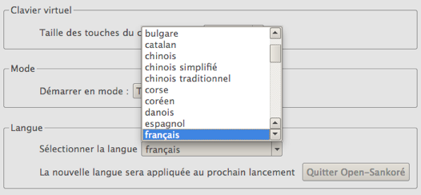

Il cambiamento della lingua del programma si fa nella prima scheda di "Preferenze" del menu Open-Sankoré, la scheda "Schermo".
La scelta della lingua diventa operativa una volta che il programma è riavviato.
Questo settaggio ha la precedenza sulla lingua di default del sistema operativo del tuo computer.
